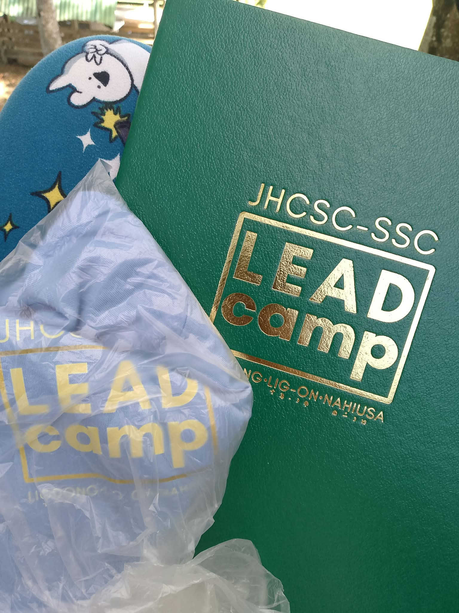

Leadership2026 LeadCamp - SCS Secretary
Participated in LeadCamp 2026 for the first time as the SCS Secretary. This experience helped me develop my leadership, communication, and teamwork skills while learning how to become a more responsible student leader.